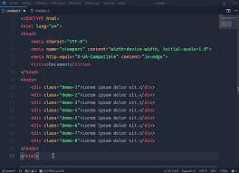
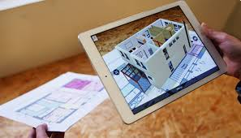

Application de Gestion de Chantier
Description : Développe une application mobile ou web pour la gestion des projets de construction. Cette application pourrait inclure des fonctionnalités comme le suivi des tâches, la gestion des ressources, la planification des horaires et la communication entre les membres de l'équipe.
Technologies : React Native pour l'application mobile, Node.js pour le backend, et MongoDB pour la base de données.

Outils de Réalité Augmentée pour la Construction
Description : Crée une application de réalité augmentée qui permet de visualiser les plans de construction directement sur le site. Cela peut aider à identifier les erreurs avant qu'elles ne se produisent et à améliorer la précision des travaux.
Technologies : Unity pour le développement de la réalité augmentée, Vuforia pour le tracking AR, et une base de données SQL pour stocker les plans.
Système de Suivi des Stocks et des Matériaux
Description : Développe un système pour suivre les stocks de matériaux de construction en temps réel. Utilise des capteurs IoT pour surveiller les niveaux de stock et envoyer des alertes lorsque les matériaux sont bas.
Technologies : Python pour le développement backend, Raspberry Pi pour les capteurs IoT, et une interface web développée en Angular pour la gestion des stocks.
Simulateur de Formation en Maçonnerie
Description : Crée un simulateur de formation qui utilise la réalité virtuelle pour former les nouveaux maçons aux techniques de construction. Cela pourrait être particulièrement utile pour les écoles de formation ou les entreprises de construction.
Technologies : Unreal Engine pour le développement VR, Oculus Rift pour l'équipement VR, et Blender pour la modélisation 3D.
Site Web Portfolio
Description : Conçois un site web pour présenter tes projets de maçonnerie et tes compétences en informatique. C'est un excellent moyen de montrer tes réalisations et de t'attirer de nouveaux clients ou opportunités professionnelles.
Technologies : HTML, CSS, JavaScript pour le frontend, et WordPress si tu veux une gestion de contenu plus facile.
Application de Mesure et de Calcul
Description : Développe une application mobile qui aide les maçons à effectuer des calculs et des mesures sur le chantier, comme les conversions de mesures, les estimations de quantités de matériaux, etc.
Technologies : Kotlin ou Swift pour une application mobile native, et Firebase pour la base de données en temps réel.

Réalisation d'un Projet
Analyse des Besoins : Détermine ce dont tu as besoin en termes de fonctionnalités et d'utilisateurs cibles.
Conception : Crée des maquettes et des schémas de ce à quoi ressemblera ton projet.
Développement : Code ton projet en utilisant les langages et les outils appropriés.
Tests : Vérifie que tout fonctionne correctement et corrige les erreurs éventuelles.
Déploiement : Mets ton projet en ligne ou le rends accessible aux utilisateurs.